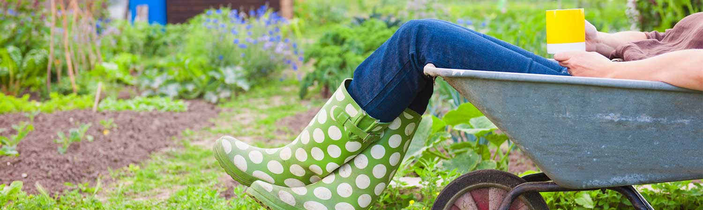

More about me ..??!!
Once I get off work, I am head over heels into one of these...
Gardening

Gardening allows you to focus on something that will give
you a feeling of true achievement. In the garden I tend to drop
my thoughts here and there. The flowers are something so beautiful
could not be designed by human hands. There is a saying that God
made rainy days so gardeners could get the housework done.
Hiking
Leave the road, take the trails.
The warm sunshine on your face, the sound of the wind rushing through
the trees overhead, and the soft earthy feel of the trail under your
boots - one would realize that
There’s an immense sense of achievement at reaching a summit after
hours of walking, and a sense of wonder as you take in the views.
For sure, there is no better hiking companion than a dog.
Traveling
No matter how many guidebooks you read, you can’t understand a
place/country like someone who has lived in it and been a part of
its culture. Try new things, meet new people, and look beyond
what is right in front of you. Those are the keys to understanding
this amazing world we live in !
Those will be the ones you remember.